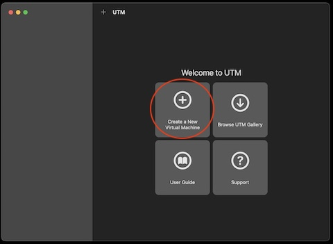
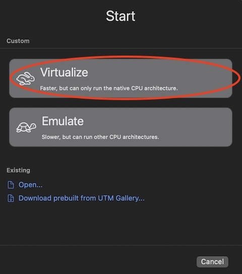
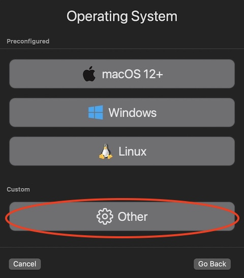
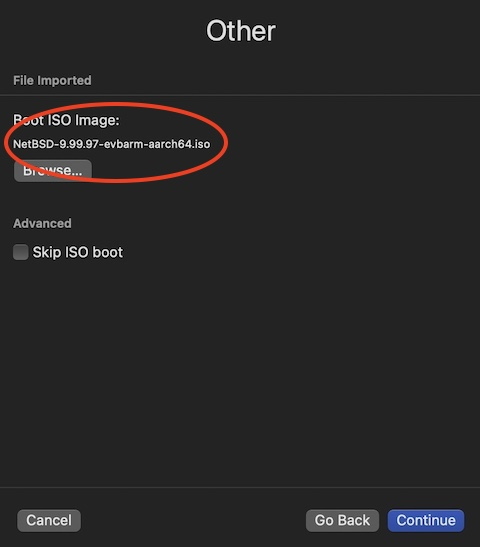
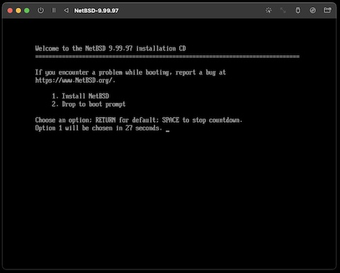
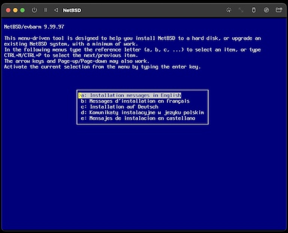
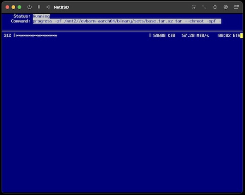
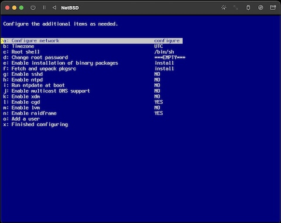
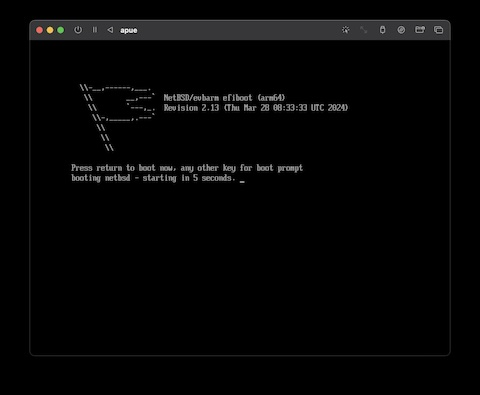
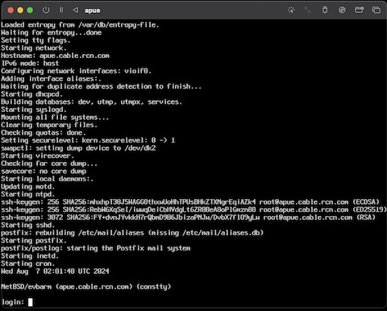

Advanced Programming in the UNIX EnvironmentCS631 - APUE - NetBSD/UTM SetupThis document will guide you through the setup of a NetBSD VM using UTM on an Apple M1 to perform all your course work on. Please follow these steps as shown; if you run into problems or have questions, please send them to the class mailing list. If you prefer, you can also follow the video tutorial: Installing your NetBSD VMCreating a new UTM ImageFirst, install UTM from https://mac.getutm.app/. Next, download the latest ISO for NetBSD/evbarm from https://ftp.netbsd.org/pub/NetBSD/images/10.0/NetBSD-10.0-evbarm-aarch64.iso and save it as ~/Desktop/NetBSD-10.0-evbarm-aarch64.iso. Start UTM and select 'Create a New Virtual Machine':  On the next screen, choose 'Virtualize', then 'Other' in the OS selection:   On the next screen, select 'Boot ISO Image' and browse to the saved file ~/Desktop/NetBSD-10.0-evbarm-aarch64.iso and 'continue':  On the following screens, you can accept all the default values, although as far as disk space is concerned, 16 GB would be plenty. Let's name the VM "apue". Installing NetBSDStart the VM. You should see the 'Welcome to the NetBSD-10.0 Installation CD' screen, where you can hit return or wait for the timeout after which the system will boot into the NetBSD installer, where we'll follow a very basic NetBSD installation:   Select 'Installatation messages in English', then select 'Install NetBSD to hard disk'. Then: Shall we continue? yes Available disks: ld4 Guid Partition Table (GPT) Use default partition sizes Partition sizes are ok Shall we continue? 'yes' Select your distribution: 'Installation without X11' Install from: 'CD-ROM / DVD /install image media'  After extraction is complete, 'hit enter to continue', then set the root password. After this, you will be on the configuration screen show below:  Here, we'll configure the network ('a' followed by return): Available interfaces: 'vioifi0' Network media type: <blank> Perform autoconfiguration? yes This should get you a DHCP lease and an overall network configuration that we wish to commit to the system: Your host name: apue Your DNS domain: <blank> Are they ok? Yes Do you want it installed in /etc? Yes Back at the configure screen shown above, you can leave the option 'Fetch and unpack pkgsrc' disabled if you so choose -- we won't be using pkgsrc in this class, but if you're interested, installing it doesn't hurt. Next, select: 'g: Enable sshd' 'h: Enable ntpd' 'o: Add a user' Note: it is required for this class to create and run your code as a non-root user, so this step is not optional. Choose your preferred username. Add the user to 'wheel', so you can su(1). Select a shell, e.g. /bin/sh and set a password. NetBSD requires users to be in the 'wheel' group to run su(1), so only your newly created user should be able to do this. This, together with the fact that the VM is intended for nothing of importance whatsoever may make it ok to not have any additional protections on the superuser account. Select 'x: Finished configuring', then 'Hit enter to continue'. Now you're back at the main install menu, where we can select 'x: Exit install System. This drops you into a shell, where we can power down the VM: shutdown -p now Once the VM has been shut down, you can close this window. Back in the main UTM screen, we now remove the ISO image from the virtual CD drive by selecting 'clear' from the drop-down menu labeled 'CD/DVD' at the bottom of the VM information. Once done, you can now boot the newly installed NetBSD VM. You should first see the NetBSD bootloader, followed by the usual boot sequence:   You can now log in and verify network connectivity, then power it down again: NetBSD/evbarm (apue) (constty) login: jschauma Password: NetBSD 10.0 (GENERIC64) #0: Thu Mar 28 08:33:33 UTC 2024 Welcome to NetBSD! apue$ ifconfig -a vioif0: flags=0x8843<UP,BROADCAST,RUNNING,SIMPLEX,MULTICAST> mtu 1500 ec_capabilities=0x1<VLAN_MTU> ec_enabled=0 address: fe:d7:b1:b2:f7:55 status: active inet6 fe80::fcd7:b1ff:feb2:f755%vioif0/64 flags 0 scopeid 0x1 inet6 fdc2:a538:d647:8432:3641:423b:87e5:c4cf/64 flags 0x40<AUTOCONF> inet 192.168.64.12/24 broadcast 192.168.64.255 flags 0 lo0: flags=0x8049<UP,LOOPBACK,RUNNING,MULTICAST> mtu 33624 status: active inet6 ::1/128 flags 0x20<NODAD> inet6 fe80::1%lo0/64 flags 0 scopeid 0x2 inet 127.0.0.1/8 flags 0 apue$ su root -c "/sbin/shutdown -p now" Using your VMStarting headlesslyUnfortunately, UTM does not currently support fully headless operation. However, we don't want to have to open the app and click on things just to start our VM. To avoid this, we can use qemu directly to
start the VM using a simple script. With this
approach, we are also port-forwarding SSH traffic to the
VM via port 2222 on Set up your VM for this classWith the VM now ready for use, you can next follow the steps to set up everything for use in this class. That will include configuration of SSH, configuring your development environment, and fetching all source code and code examples. These steps are more or less the same for use of UTM and VirtualBox, and you can find them in this document. [Course Website] |